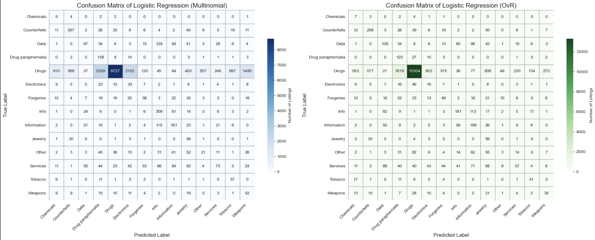
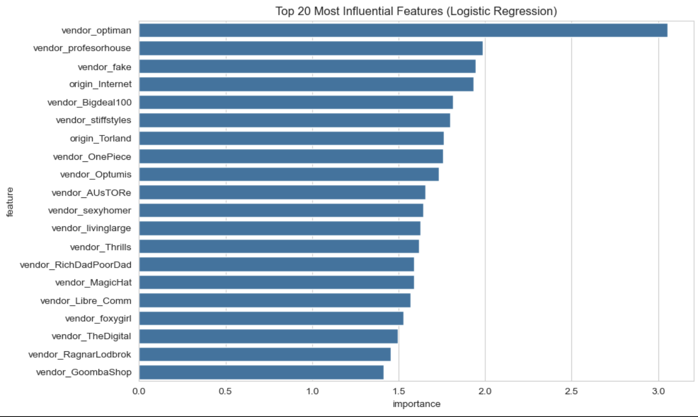
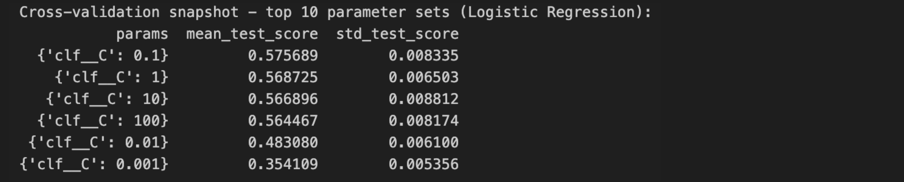
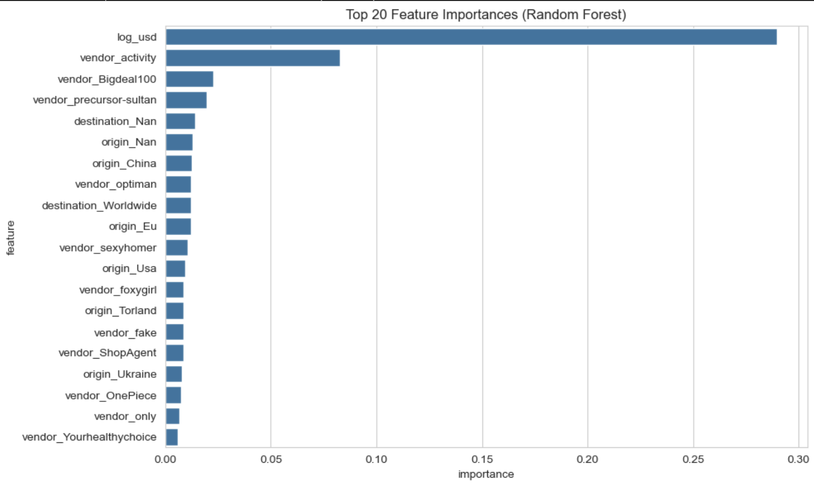
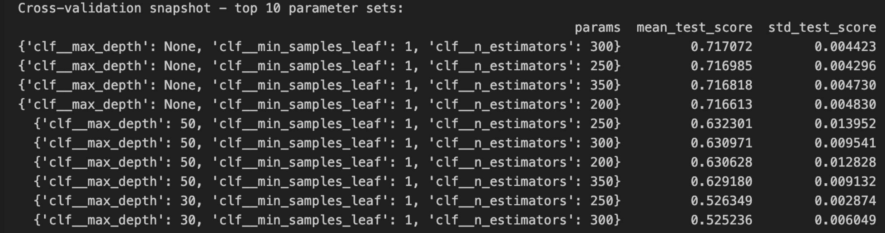
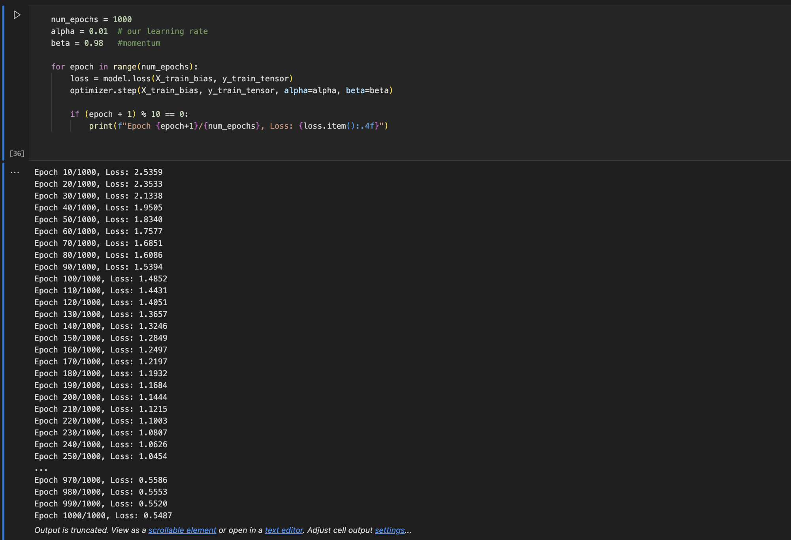

Abstract:
In this project, we built machine learning models to predict the type of product or service being sold on the dark web marketplace Agora using only = data like price, rating, vendor, and shipping details. Our goal was to see if we could classify listings into categories such as Drugs, Services, and Weapons without relying on text analysis. We trained multiple models, including logistic regression, random forest, and a custom multiclass logistic regression built from scratch in PyTorch. We handled class imbalance by downsampling and used evaluation metrics like accuracy and F1 score to measure performance. Our random forest model performed the best, reaching over 94% accuracy. This shows that structured metadata alone can help identify product types on darknet markets. This was a super fun project that we got to work on and learnt a lot from. GitHub Repo
Introduction:
Darknet marketplaces like Agora present a valuable opportunity for machine learning researchers by offering access to large scale, anonymized data from real illegal marketplaces. This kind of data allows us to train models that can help identify patterns in illicit trade and potentially assist law enforcement in detecting and preventing transactions based on recurring keywords, slang, and product types and local names used in these hidden parts of the Internet.
In this project, our main goal was to build a model that could automatically predict the type of product or service such as “Drugs,” “Services,” or “Weapons” based on basic metadata from the listings. We did this by experimenting with classification models like logistic regression, random forest, and our own implementation of multiclass logistic regression using PyTorch. We also looked into how data imbalance affected model performance and tested how well our models generalize to unseen samples.
This problem matters because predicting product type from metadata alone could help researchers and officials identify dangerous trends early without needing to parse large amounts data. It also helps us understand if features and information like price, vendor activity, and geographic origin strong enough signals to identify illicit content? Understanding this helps us understand how effective lightweight models can be for dark web analysis before applying more complex NLP or deep learning methods.
Many researchers have already shown that language on the dark or deep web differs substantially from standard web text. Choshen et al. (2019), for example, trained classifiers to distinguish legal from illegal forum posts and found that dark web posts used fewer personal pronouns and more abbreviation heavy slang features that can strongly influence NLP models. We also found that, Yuan et al. (2018) introduced an unsupervised method to extract dark web specific jargon by comparing frequency patterns between cybercrime forums and public platforms like StackOverflow. These approaches highlight the importance of letting models discover their own meaningful features rather than imposing external definitions of criminal language.
To push domain specific modeling even further, Jin et al. (2023) introduced DarkBERT, a RoBERTa based language model trained on millions of pages from onion sites. Their model achieved high performance on category classification tasks such as Drugs, Porn, and Financial Services by leveraging raw text data. While our project does not attempt anything at that scale, we do adopt a similar category structure, as Agora dataset already follows the same structure, in order to compare our results, even if loosely, to theirs. Of course, their models had full access to token-level language, while our relied on fixed features, so a direct comparison isn’t logical, but it does help us set a conceptual benchmark that getting really high accuracy scores is possible.
Ranaldi et al. (2023) take a more technical approach by evaluating how well pre-trained transformer models like BERT and RoBERTa actually generalize to dark web text. Their experiments showed that even strong models fine tuned on standard corpora tend to perform poorly on dark web data unless specifically adapted. They argue that the domain shift is so significant that general LLMs struggle with slang, obfuscation, and even sentence structure. This reinforces the idea, also shown in DarkBERT, that working with dark web language requires domain-adapted models, especially models trained for that exact purpose. While we didn’t use transformers in this project, this helped clarify why basic models like logistic regression still matter as they’re easier to interpret and can help us understand whether we are even learning anything meaningful before scaling up to custom models.
On the other hand, Raman et al. (2023) offer quite a comprehensive review of dark web research to date, as they mapped over 200 papers and connecting their findings to broader ethical and policy frameworks like the UN Sustainable Development Goals (SDGs). One of their key points is that while dark web research has clear utility, especially for law enforcement and cybersecurity, there’s a persistent lack of discussion around its potential misuse. They emphasize that even anonymized datasets can reinforce racial or geographic stereotypes if researchers aren’t actively accounting for that risk. Their perspective motivated us to consider a more critical lens for the results and patterns we find in this project, or any research of the same topic. It made us consider about not just the accuracy or F1 score, but who might be harmed if those predictions were interpreted out of context, especially in terms or location data etc.
Overall, our project focused on building models that use structured data to classify products or services being sold on teh dark web. While these models aren’t as powerful as deep learning models, they’re easier to work with, faster to train can still be very useful in real world applications like helping law enforcement
Values Statement:
The main users who could benefit from our project are law enforcement agencies, cybersecurity analysts, or researchers who study illegal online markets. By using machine learning to classify the types of products and services sold on dark web marketplaces like Agora, our model can help these people identify patterns in illegal trade and better understandwhat kind of products or services are being sold and where products come from and where they are going.
Beyond direct users, this project could also affect vendors and communities mentioned in the data. Even though the dataset is anonymized, some product listings still include origin or destination information, which can easily be misread. If not handled carefully, our model’s results might create assumptions that certain countries or regions are more involved in illegal activities like drug or weapon sales. For example, seeing lots of listings from one area might lead people to wrongly associate that place with crime. So, we have to be careful that our technology doesn’t reinforce harmful stereotypes or lead to unfair targeting.
We chose to work on this problem because we were curious about how machine learning could be applied to real-world datasets that deal with sensitive and high-impact topics. In addition to that, the darkweb is just a very interesting topic that got Azaan and me really interested in seeing how we can not only leawrn about the market places in teh dark web but also how we can use machine leanring and apply it to this field. This project gave us a chance to build skills in classification and model evaluation, while also thinking about the ethical aspects of tech. It helped us understand that building models isn’t just about performance but also about understanding the potential impact.
If used responsibly, the technology we built could help make the world a slightly safer place by providing tools to track illegal products and make interventions that prevent such goods from being exchanged. But it also reminded us that fairness and caution matter just as much as accuracy when applying machine learning to complex, real world problems because of the various potential impacts it could have.
Materials and Methods
Our Data:
For this project, we used the Dark Net Marketplace (Agora 2014–2015) dataset available on Kaggle, collected and published by Philip James Kaggle. The dataset contains scraped product listings from the Agora darknet marketplace, which was active between 2014 and 2015. Each row in the dataset represents a single product listing and includes columns like the vendor name, product title and description, category, price in BTC, origin and destination, and vendor rating.
This dataset came from an HTML dump that a Reddit user named “usheep” shared online. They briefly demanded payment from vendors in exchange for not exposing their identities. While what happened to “usheep” is unknown, the data they posted was later cleaned and made available on Kaggle. Agora shut down a few months afterward, though it’s unclear if the two events are related.
After loading the dataset, we found that there were over 100,000 listings across a wide range of product types. Some categories like “Drugs” had tens of thousands of listings, while others like “Jewelry” or “Chemicals” had fewer than 100. This imbalance in class sizes was a major factor we had to address during preprocessing and modeling.
We also noticed that some listings were missing values for important columns like destination, rating, or price, and some entries had strange formatting (e.g., prices with extra text or symbols). We cleaned and standardized these fields by removing non-numeric tokens, fixing country labels, converting prices to USD, and calculating log-transformed price values. We also extracted category and created new features like vendor_activity, which counts how many listings each vendor had overall.
A limitation of the dataset is that it only reflects the Agora marketplace, which may not fully represent other darknet markets. Also, because the data comes from just a one-year time span (2014–2015), it might not capture how darkweb behavior has changed over time. In addition, while origin and destination fields are included, these are self-reported and may not always be accurate or truthful. The biggest limitation in our project was the heavy class imbalance, as from our data, majority of the products happened to be drugs.
Another concern is that certain countries or regions appear more often than others, which may reflect user behavior or scraping bias and not the actual activity. So when interpreting model results or patterns, we had to keep in mind that some of this data could be incomplete or misleading. Still, this dataset gives us a rare look into real world illegal market behavior online, which helped us experiment with classification models and try to better understand how different product categories are listed and described on the dark web.
Our Approach:
We used the cat1 column as our target variable. This column included the toplevel category for each listing, such as Drugs, Services, Weapons, Counterfeits, and more. As predictors, we used different feautres from our dataset like price, score (vendor rating), origin, destination, and vendor. Later on, we also added a new feature called vendor_activity, which represented how active a vendor was based on their total number of listings.
We subset the data in different ways throughout the project. At first, we removed listings with missing price, rating, or destination data. We also dropped rows where the cat1 category was undefined. In on of our expeirments for our project, since the dataset was very imbalanced, we manually downsampled the majority class (mostly “Drugs”) and removed very small categories with fewer than 500 examples (like Chemicals, Tobacco, and Jewelry). We created a balanced dataset with 600 listings per class to help our model learn equally from each category. We used the rest of the unused data for testing how the models generalize on unseen samples.
We trained two main models on this data: Logistic Regression and Random Forest. We chose logistic regression as our baseline because it is simple, and fast to train. We used the multinomial regression with class weights set to “balanced” to account for data imbalnnce when using the original dataset where we did not do the downsampling. We then chose Random Forest because it could capture more complex patterns and because it usually performs better on structured data with class imbalance.
We trained our models using Scikit-learn on Jupyter notebook using our Conda envrionment. We also implemented our own multiclass logistic regression model from scratch using PyTorch. This helped us understand the full training process, including caulating softmax probabilities, cross-entropy loss, and updating weights using gradient descent with momentum.
For evaluation, we split our dataset using an 80-20 train-test split. We measured performance using accuracy, macro F1 score, and micro F1 score. We used confusion matrices and classification reports to see how well each class was predicted. We also used GridSearchCV to tune the regularization strength for logistic regression, and compared those results to our orginal model’s results.
We did not perform a full bias audit, but we were aware of issues that can come from imbalanced data and possible harm. For example, we were careful not to make conclusions about countries listed in the origin and destination fields because they could reflect vendor input and not actual geography. We focused on evaluating fairness using macro F1 scores, which treat all classes equally regardless of their size.
Baseline: Logistic Regression Model
We experimented with logistic regression using both One-vs-Rest (OvR) and Multinomial classifiers to predict product categories based on features like price, vendor activity, origin, and destination. Both models used class_weight=“balanced” to address class imbalance, especially since categories like “Drugs” were heavily overrepresented.
The OvR model performed better overall, achieving an accuracy of 66.3%, a macro F1 score of 23.8%, and a micro F1 score of 66.3%. It achieved a strong F1 score of 83% on the dominant “Drugs” class but struggled on rare categories like “Chemicals” (2%), “Weapons” (13%), and “Jewelry” (12%), which pulled down the overall macro F1.
In contrast, the Multinomial model had lower accuracy at 46.1% and a macro F1 score of 21.9%, misclassifying more listings from the “Drugs” category and performing worse across most classes. Confusion matrices for both models showed a clear bias toward majority classes, revealing that using class weighting alone wasn’t enough to ensure balanced performance across all categories.

We tested whether adding new features like vendor and vendor_activity would improve performance, and the results confirmed our hypothesis. The One-vs-Rest (OvR) logistic regression model showed a major improvement, with an accuracy of 88.61%, a macro F1 score of 57%, and a micro F1 score of 89.0%. The Multinomial model also improved, reaching 84.29% accuracy, a macro F1 score of 55.0%, and a micro F1 score of 84.0%.
These improvements make sense because certain vendors specialize in specific product types like drugs or counterfeit goods. Including vendor related features gave the model stronger, more reliable signals, helping it make more accurate and balanced predictions—especially for the smaller, underrepresented categories.
After seeing performance improvements from adding vendor and vendor_activity as features, we moved on to fine-tune our logistic regression model using GridSearchCV. This allowed us to test multiple values for the regularization parameter C and find the best configuration using 5-fold cross-validation. Because our dataset is imbalanced, we used the macro F1 score as our evaluation metric to ensure the model considered all classes equally—including the minority ones. GridSearchCV helped us identify the most effective C value while maintaining our preprocessing steps like scaling numeric features and one-hot encoding categorical ones. The result was a more balanced and generalizable logistic regression model.
After fitting our fine-tuned model, we saw strong results: the accuracy reached 88.95%, and the macro F1 score improved to 58.12%. This was a clear boost compared to earlier versions of the model. Looking at per class performance, the model still did very well on the dominant “Drugs” category, but also improved on smaller categories like “Jewelry”, “Weapons”, “Information”, and “Services.” Precision and recall scores were more evenly distributed across classes, meaning the model was making more reliable predictions. Some small categories like “Chemicals” and “Other” remained challenging, but overall, the results showed that tuning made the model fairer and more accurate across product types.
To better understand what was driving this improved performance, we examined the model’s coefficients. We looked at the top 20 most influential features by taking the absolute average weight across all classes. The most impactful feature was vendor_optiman, with a coefficient magnitude of 3.05—far above any other. This suggests that this vendor has a unique listing pattern that is highly predictive of certain categories. Other strongly weighted vendors included vendor_profesorhouse, vendor_fake, and vendor_Bigdeal100, all of which appear consistently associated with specific product types. This confirms that vendor identity played a major role in the model’s decision making and helped boost classification accuracy.

In fact, nearly all top 20 features are vendor related, confirming that the model relies heavily on vendor names to distinguish categories. This supports the hypothesis that many vendors specialize in certain niches (e.g., drugs, counterfeit items, or digital goods), and their presence acts as a strong proxy for the class label.
Only two non vendor features:origin_Internet and origin_Torland, made it into the top 20, indicating that origin still plays a minor role but is far less informative than vendor identity. Notably absent are price related features like log_usd or behavioral indicators like vendor_activity, which are highly influential in the Random Forest model as we can see in the discussion below. This suggests that Logistic Regression, being linear, is more sensitive to categorical signals tied directly to vendor behavior than to continuous variables like price. Overall, vendor identity emerges as the dominant signal in guiding classification decisions for the logistic regression model.
Afterwards, we wanted to look at the cross-validation results for our tuned-LR model and it revealed that the optimal regularization strength occurs at C=0.1, achieving the highest macro F1 score of 57.6%. This value of C provides a moderate level of regularization, strong enough to prevent overfitting on noisy or sparse vendor and location features, but not so strong that it underfits the true decision boundaries. Interestingly, increasing C beyond this point (to 1, 10, and even 100) led to a slight but consistent decline in performance, with macro F1 scores dropping to around 56.4%–56.9%. This suggests that as the model became less regularized, it likely overfit to the dominant classes or high-cardinality features like vendor names, harming its ability to generalize across all classes.

Lowering C below 0.1 hurt performance even more dramatically: C=0.01 dropped the score to 48.3%, and C=0.001 plummeted it to 35.4%. This confirms that overly strong regularization forces the model to ignore valuable signal in the feature set, especially in a task like this one, where vendorspecific patterns carry a lot of predictive power. Overall, we agreed that the LR model is quite sensitive to the C parameter, with a sweet spot around 0.1. The relatively low standard deviations ≈0.005–0.008, across folds also show stable cross validation behavior, giving us confidence in this tuned configuration.
Random Forest Classifier:
After testing logistic regression, we switched to a random forest classifier using the same pipeline and saw a significant improvement in performance. With 500 trees and class balancing, the model achieved 94.8 percent accuracy and a macro F1 score of 74.1 percent, which was a clear improvement over the logistic regression model. This gain is likely because random forests handle complex, nonlinear patterns well and are more robust to class imbalance, which the LR model had trouble identifying. As a result, the model gave more accurate and fair predictions across all product categories.
Since our base random forest model was already performing well, we used GridSearchCV to automatically tune the hyperparameters like we did for LR model, as described above. Our tuned-RF model performed strongly, achieving 94.8 percent accuracy and a macro F1 score of 74.1 percent using default parameters and class balancing. It handled the dominant class “Drugs” very well and also performed reliably on both mid-sized and smaller categories. After tuning with GridSearchCV, we found that the best parameters matched our original setup, confirming that our initial choices were already near-optimal. Since performance remained the same, further tuning would offer little improvement and might waste resources. Overall, the model proved to be effective without needing extensive hyperparameter adjustments.
Similar to LR model, we decided to look into the Feature Importance plot for RF model as well. 
As we can see from the plot above, The top 20 features from our tuned Random Forest model highlight which inputs were most valuable for classification. The most important was “log_usd” (log-transformed price), which alone contributed nearly 29 percent of the model’s total importance. This aligns with intuition, as different product categories often have distinct pricing patterns. The next key feature was “vendor_activity,” contributing over 8 percent, showing that how active a vendor is can indicate what kind of products they sell.
Most of the remaining top features were one-hot encoded vendor names, such as vendor_Bigdeal100, vendor_precursor-sultan, and vendor_optiman, suggesting that specific vendors were heavily associated with certain product types. A few origin and destination features also appeared in the top 20—like origin_China and destination_Worldwide—showing that location still had moderate predictive power, particularly for categories like chemicals or tobacco. Altogether, the model relied heavily on a combination of vendor specific and geographic metadata to make accurate predictions.
Again, similar to our process with the LR model, we looked into the cross-validation snapshot for our hyper-tuned RF model and found that: 
Our cross validation results confirmed that the model performs best with deep, unrestricted trees. The top configurations all used max_depth=None and min_samples_leaf=1, achieving a macro F1 score around 71.7 percent with very low variance across folds. Introducing depth limits like 50 or 30 led to noticeable performance drops, suggesting that deeper trees better capture the complexity of our data. These findings reinforce that our original setup—300 trees with no depth limit—was already near-optimal.
Custom LR Model:
We also built our own multiclass logistic regression model from scratch using PyTorch. We used a weight matrix for all classes, applied the softmax function for predictions, and optimized it using gradient descent with momentum. This model trained over 1000 epochs and reached about 63.2% test accuracy. Its performance was the closest to the basic logistic regression model. For future works we plan to fine tune this model and maybe implement a pytorch neural network to increase its accuracy significantly.

Overall, the Random Forest classifier was the most successful at classifying the products correctly across all classes. It outperformed logistic regression, especially on smaller categories, which often get ignored in imbalanced datasets. Our custom model helped us understand how softmax regression works at a deeper level, and it could be improved with more tuning or regularization in future work.
Concluding Discussion:
Our goal was to build a model that predicts the category of a product or service being sold on the Agora dark web marketplace based on the features we picked, which were: “deals”, “log_usd”, “origin”, “destination”, “vendor_activity”, and “vendor”. Overall, our project worked fairly well. We were able to train and test different models like logistic regression, random forest using scikit-learn methods, as well as a custom Multi-nomial Logistic Regression model that we built from scratch. Not only that, we also compared the result difference between using “OvR” and “Multinomial” options in our imported Log. Reg. model from Scikit-learn. We realized that if we chose ‘ovr’, then a binary problem is fit for each label. For ‘multinomial’ the loss minimized is the multinomial loss fit across the entire probability distribution, even when the data is binary. Comparing the results, we found that “OvR” actually performs better for our dataset, especially for Accuracy.
We successfully met most of the goals we set in our proposal, since we built working classification models, tested them on real unseen data, and improved their performance by balancing the training set and tuning the hyperparameters. We also made sure that our hyperparameter tuned model performed better than the base model, or the majority baseline. We found that the random forest model provided the best results, especially for categories like Drugs, Information, and Counterfeits. We also used confusion matrices and classification reports to compare and contrast between each model, as it helped us identify where the model performed well and where it struggled. Lastly, we plotted Coefficient Matrix and Feature Importance plots of our Log. Reg and RFC models, respectively, along with their cross-validation snapshot table that helped us pinpoint the parameters that allows our model to perform the best.
Our results compare very similarly to the other papers and studies we mentioned earlier in the Introduction, since all of them had quite positive result, especially DarkBert had more than 93% in accuracy and F1 metrics. We did reach up to 95% in accuracy, we did fall short in F1-Macro scores, getting up to 74.1% using tuned RFC model.
If we had more time or resources, we would have tried implementing a TF-ID vectorization model based on the product descriptions of Agora, as well as include even larger dataset and train our model on the combined dataset, following DarkBert’s footsteps, to getting even more variety and diversity in our dataset. If technological limitations weren’t a concern, we would have tested even larger hyper-parameter ranges with multiple combinations, which would increase our code runtime exponentially. Lastly, we also would have done a deeper analysis for bias in the data, and look for possible solutions of acknowledging and mitigating them before it contaminates the data or skews the narrative of the results in unintended directions.
Group Contributions Statement:
Azan and Prashanth Babu (PB) worked together on this project. Azan found the Agora dataset and Pb and Azaan worked together to decide the overall direction of the project. Both Azan and PB worked together on the preprocessing and cleaning of the dataset at the beginning. Azan cleaned and finalized the version of the dataset that we used for training the models and also started the exploratory data analysis. PB continued the rest of the data exploration afterward.
Azan trained the logistic regression model and built the pipeline for both the logistic regression and random forest models. PB worked on fine tuning the logistic regression model using GridSearchCV and tested and evaluated the results. PB also worked on manual balancing of the dataset by downsampling, ran experiments on how different sampling sizes impacted model performance, and built and tested a custom multiclass logistic regression model from scratch in PyTorch.
Azan wrote the introduction and abstract sections of the blog post. PB wrote the mission and values, the approach, and the dataset/methods section. Both Azan and PB worked together to write the results and concluding discussion sections of the blog post.
Personal Reflection:
From this project,I learned many things like how to use machine learning to solve complex issues that have big potential use in the real world and many things about communitcation and team work and even learned how to build a multiclass logistic regression model from scratch using PyTorch. I also learned that communication is very important, especially when working with a partner. At times, it was hard to work together because our schedules were different and our communication wasn’t always clear. I realized that actually sitting down, planning clearly, and talking through ideas step-by-step made a big difference. It helped us understand what to do, how to divide the work, and how to move forward instead of wasting time on unclear messages.
I feel very proud of what we achieved in this project. Even though our custom model didn’t have the highest accuracy, I was really happy that I was able to build and train it myself. That was a big accomplishment for me, and it made me more excited about trying harder machine learning projects in the future. I think we mostly met our original goal, which was to get around 70% accuracy when predicting product categories. We even got around 94% accuracy with our final random forest model, which was great. But I do think that we would have done even better if we had a more diverse dataset with less class imbalance.
This experience taught me a lot. At first, I didn’t know how to do multiclass classification and just wanted to stick with binary because it seemed easier. But I pushed myself to learn something new. I failed a few times, but I kept going and finally figured it out. That showed me that even when something is hard, if you keep trying, you can learn it. I want to carry that lesson with me to other courses, projects, and my future career. Now I feel more confident to take on challenges and keep pushing through when things get tough.